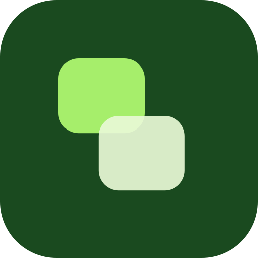

Finara
Made by
Herysap61
Finara belum bisa berjalan di tampilan ini
Pratinjau WhatsApp atau Files tidak menjalankan aplikasi. Buka lewat tautan web di Safari atau Chrome, bukan dari file yang dikirim.
Catat